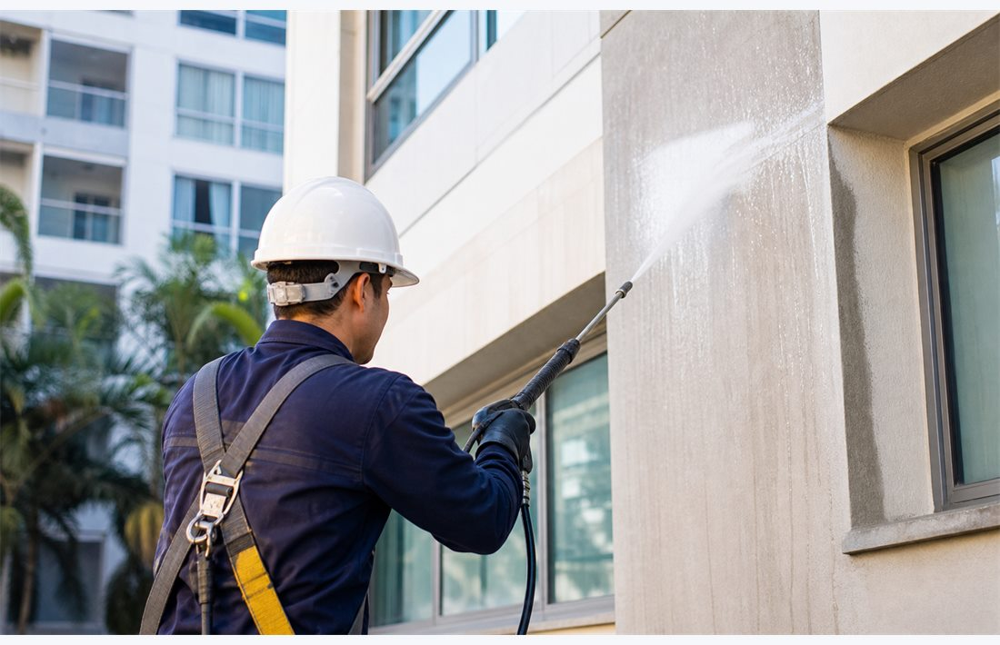

JM & Obras · São Paulo e região
Benefícios da lavagem predial periódica
Veja como planejar a lavagem da fachada conforme o revestimento e as necessidades do imóvel.

Cuide da apresentação do imóvel
A limpeza remove sujeiras e resíduos das áreas previstas no serviço e contribui para a apresentação da fachada. O resultado esperado deve ser avaliado conforme o revestimento e o tipo de mancha.
Escolha o procedimento conforme a superfície
Informe o material da fachada e as condições observadas. Produtos e procedimentos devem ser escolhidos pela equipe responsável após a avaliação das áreas.
Integre limpeza e conservação
Use o histórico das intervenções para planejar os próximos cuidados. Ao solicitar o orçamento, descreva as áreas, as condições de acesso e os objetivos da limpeza.
Conheça nosso serviço de lavagem predial
Converse sobre seu imóvel
Envie a localização, fotos e as áreas que precisam de atendimento para solicitar uma avaliação.
Solicitar orçamento pelo WhatsAppPreferir formulário de contato